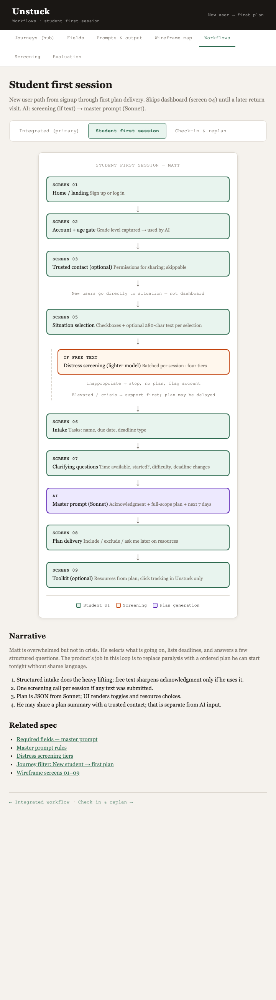

Student first session
New user path from entry hub → student home → first plan. Dashboard (screen 04) appears on later return visits
(/home redirects when a plan is saved).
AI: screening (if text) → Haiku plan draft → Sonnet refine when route escalates
(model routing).

Student first session — Matt
Entry hub
/
Choose student or counselor
↓
Screen 01
Student home (
/home)
Welcome + intake CTA (no OAuth in live app)
↓
Screen 02
Grade + pilot school
visitor_id · DEMO / PILOT-A
↓
V2: trusted contact (screen 03) — skipped in live app
↓
New users go directly to situation — not dashboard
↓
Screen 05
Situation selection
Checkboxes + optional 280-char text per selection
↓
If free text
Distress screening (lighter model)
Batched per session · four tiers
Inappropriate → stop, no plan, flag account
Elevated / crisis → support first; plan may be delayed
↓
Screen 06
Intake
Tasks: name, due date, deadline type
↓
Screen 07
Clarifying questions
Time available, started?, difficulty, deadline changes
↓
AI
Plan generation
Haiku draft → Sonnet refine if escalate · then enforcePlanRules
↓
Screen 08
Plan delivery
Include / exclude / ask me later on resources
↓
Screen 09
Toolkit (optional)
Resources from plan; click tracking in Unstuck only
Student UI
Screening
Plan generation
Narrative
Matt is overwhelmed but not in crisis. He selects what is going on, lists deadlines, and answers a few structured questions. The product’s job in this loop is to replace paralysis with a ordered plan he can start tonight without shame language.
- Structured intake does the heavy lifting; free text sharpens acknowledgment only if he uses it.
- One screening call per session if any text was submitted.
- Plan is JSON from Sonnet; UI renders toggles and resource choices.
- He may share a plan summary with a trusted contact; that is separate from AI input.